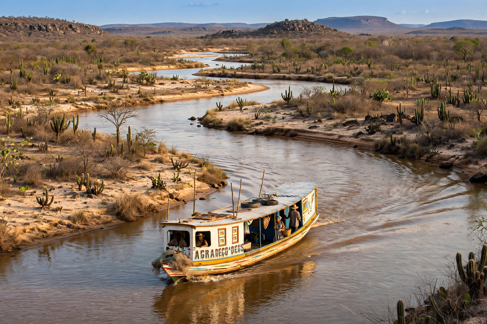

| São Francisco River | |
 | |
| Country | Brazil |
|---|---|
| Length | 2,914 km |
| Source | Serra da Canastra, Minas Gerais |
| Mouth | Atlantic Ocean, between Alagoas and Sergipe |
| Basin size | about 641,000 km² |
The São Francisco River (Portuguese: Rio São Francisco) is the longest river that runs entirely within Brazil, and the fourth longest in South America. Affectionately called the Velho Chico ("Old Chico"), it flows 2,914 km north and east from the Serra da Canastra in Minas Gerais through Bahia, Pernambuco, Alagoas and Sergipe to the Atlantic Ocean.
From its source the river flows north through Minas Gerais past Pirapora, then across Bahia, where it forms the great Sobradinho reservoir, one of the largest artificial lakes in the world. Turning east, it forms the border between Bahia and Pernambuco — irrigating the fruit farms of Petrolina and Juazeiro — and then between Alagoas and Sergipe, passing the Paulo Afonso Falls and the Xingó canyon before reaching the sea near Piaçabuçu.
The river is a lifeline for the semi-arid sertão, providing water for irrigation, drinking and hydroelectricity from a cascade of dams including Três Marias, Sobradinho, Itaparica, Paulo Afonso and Xingó. Known in colonial times as the "river of national integration", it linked the mining interior to the coast. It supports many endemic fish species, some threatened by dams and water diversion.
The São Francisco River Integration Project, a large federal scheme of canals and pumping stations, diverts a portion of the river's flow northward to supply Ceará, Paraíba, Pernambuco and Rio Grande do Norte. Construction began in 2007 and the main axes entered operation from 2020 amid continuing debate over cost and environmental impact.